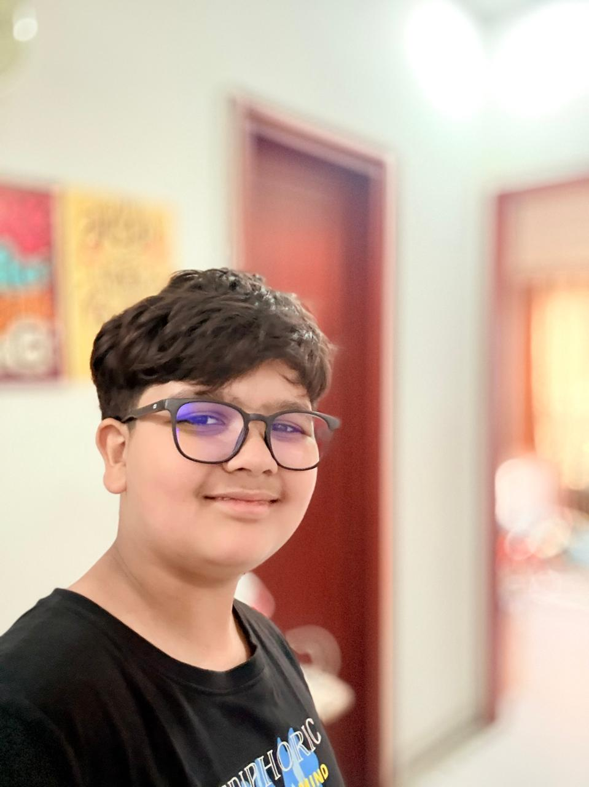

Robotics Portfolio
I build smart machines that turn ideas into real-world systems.
I'm Aahil, a robotics enthusiast focused on Arduino, IoT, AI, and embedded technology. I also build mobile apps, iOS experiences, Windows software, and websites. I love designing useful digital and physical systems that solve real problems.

Creator Profile
Aahil Rajput
Robotics Enthusiast
- Autonomous robots
- Smart IoT systems
- Apps, websites, and software
About Me
Engineering curiosity into working prototypes.
I enjoy building smart and autonomous systems using Arduino, sensors, embedded components, and connected devices. My work also extends into mobile app development, iOS, Windows software, and modern websites.
From line-following robots to smart home automation and interactive apps, I like combining hardware and software into projects that move, react, and feel alive.
With 15+ builds already completed, I’m pushing toward even more ambitious work by blending AI, automation, robotics, and full-stack product thinking.
Featured Work
Projects that reflect how I think and build.
Line Following Robot
An autonomous robot that uses IR sensors for path detection and corrects its movement in real time for smoother navigation.
Obstacle Avoiding Robot
A smart navigation robot that detects obstacles with ultrasonic sensing and changes direction to move safely through space.
Smart Home Automation
An IoT-based control system designed to manage appliances and bring connected convenience into everyday living.
Bluetooth / Wi-Fi Controlled Car
A wireless robotic car controlled through a mobile interface, blending remote communication with responsive movement.
Mobile App Development
I create mobile experiences that turn ideas into practical, usable products with clean flows and real-world purpose.
Websites and Software Builds
I also build websites and Windows-based software, combining interface design with logic, functionality, and strong visual presentation.
Capability Stack
Tools and technologies behind my builds.
Arduino
C++
Python
IoT
Embedded Systems
Mobile Apps
iOS
Windows
HTML
Website Making
Sensors
Actuators
Automation
AI Exploration
Hardware Thinking
I like building systems that sense, respond, and interact with the physical world in meaningful ways.
Software Control
I use code to give machines behavior, precision, and products the logic needed to feel smooth, useful, and responsive.
Platform Range
I build across robotics, websites, mobile apps, iOS, and Windows, so I can shape ideas into experiences on many different platforms.
Future Direction
My next step is combining robotics with AI to create even more capable, adaptive, and memorable solutions.
Contact
Let’s build something exciting.
If you want to collaborate, connect, or see more of my work, you can reach me through the links below.